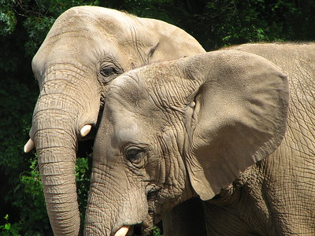
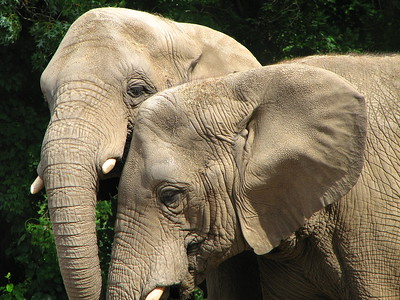

Wildlife Trafficking in Western Africa
Data is from January 2017 to December 2021. Please note that the July 2019 and August 2020 briefings are unavailable.
Dashboard Definitions
- Event: An instance of wildlife trafficking e.g. a seizure or arrest.
- Product: The specific part of an animal being trafficked e.g., the skin or tooth of an animal. The product may be left raw such as an elephant tusk, or processed such as a piece of elephant ivory.
- Arrests: A trafficker is detained by legal authority.
 

About Us
This project was created by three Worcester Polytechnic Institute computer science majors for their Major Qualifying Project (MQP):
- Devin Coughlin ('22)
- Maylee Gagnon ('22)
- Victoria Grasso ('22)
- Renata Konrad, Ph.D
- Kyumin Lee, Ph.D
- Guanyi Mou
- Meredith Gore, Ph.D
- Patricia Raxter, Ph.D
Project Goal
Our goal for this MQP was to design and develop a pipeline to extract data from the Eco Activists for Governance and Law Enforcement (EAGLE) reports and effectively display the data to help experts in the field examine instances of wildlife trafficking. The Dashboard tab of this website displays the data we extracted from EAGLE articles.
What is Wildlife Trafficking?
The International Consortium on Combating Wildlife Crime, a leading expert, defines wildlife trafficking as “the taking, trading (supplying, selling or trafficking), importing, exporting, and processing, possessing, obtaining and consumption of wild fauna and flora, including timber and other forest products, in contravention of national or international law” TRAFFIC | Wildlife Crime. (n.d.). Retrieved November 21, 2021, from https://www.traffic.org/what-we-do/projects-and-approaches/wildlife-crime/.
Why was this project created?
Sifting through the EAGLE releases is tedious work for those combating wildlife trafficking such as law enforcement, government agencies, and researchers. There can be many seizures happening within one country over one month so those combating wildlife trafficking have a lot of data to keep track of and read through. Automatically collecting the data from the EAGLE articles and displaying it on this website will hopefully help those combating wildlife trafficking.
Data
Eco Activists for Governance and Law Enforcement (EAGLE), aims to impede wildlife trafficking and related corruption through civic activism and collaborating with governments. They do so through investigations, arrests, prosecutions, and publicity. The organization covers nine countries, Cameroon, Congo, Gabon, Togo, Senegal, Benin, Côte D’Ivoire, Burkina Faso, and Uganda.
Countries part of the Eagle network:

EAGLE releases monthly briefings containing details of their recent work including seizures and wildlife trafficker arrests across those West African countries. We utilize EAGLE's monthly reports to generate visualizations that show an overview of the data.
Click here to view the EAGLE website.Resources
spaCy is the Python library we used to create our machine learning pipeline to extract the EAGLE data.
Click here to view the spaCy library.Tableau is the data visualization tool we used to organize and display the EAGLE data.
Click here to view Tableau's website.Database
...